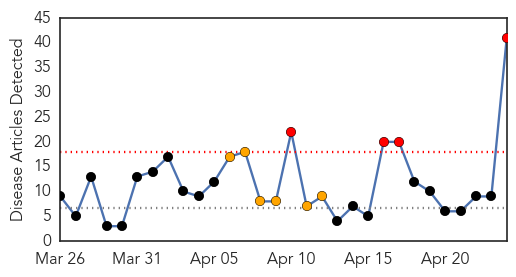

30 Day Trends
Web: 4 alerts, 6 warnings
Twitter: 0 alerts, 0 warnings
Top Articles:
- 0.994
- Measles cases hit record levels in U.S.; vaccinations encouraged
- 0.990
- Possible measles outbreak in Ohio under investigation
- 0.989
- Measles get off to a fast start in U.S.
- 0.986
- Health officials confirm Ohio measles outbreak
- 0.985
- Highest number of measles outbreaks in the U.S. since 1996 with many cases stemming from travelers arriving from the Philippines
- 0.985
- Highest number of measles outbreaks in the U.S. since 1996 with many cases stemming from travelers arriving from the Philippines
- 0.985
- CDC: Measles vaccine best defense against the disease
- 0.984
- Provinces Report No New Measles Cases
- 0.981
- CDC Reports Most Measles Outbreaks Across the United States Since 1996
- 0.979
- Measles off to fast start, as cases trend up
- 0.978
- Measles 'early and active' in U.S.
- 0.978
- Measles off to a fast start, as cases trend up
- 0.975
- Measles illnesses off to fastest start in 18 years; experts worry about spread in hospitals
- 0.973
- U.S. officials worried as measles outbreaks spike
- 0.972
- CDC: Vaccines save hundreds of thousands of lives
- 0.968
- CDC reports biggest measles outbreak since 1996
- 0.965
- Measles cases surge in U.S., fueled by unvaccinated travelers
- 0.964
- CDC Hits Back at Anti-Vaccine Movement
- 0.960
- A Measles Outbreak In The Philippines Travels To The U.S.
- 0.958
- Health officials warn against measles outbreak
- 0.953
- Measles uptick worries health experts
- 0.952
- Update on Philippines measles situation
- 0.947
- Measles Death Toll Climbs in Vietnam
- 0.926
- Vax for Kids Saves Lives and $$$
- 0.916
- Vaccines prevent more than 700,000 child deaths in the U.S.: CDC
- 0.891
- CDC: Vaccines Prevented 322M Diseases
- 0.888
- Experts concerned about strange behavior of measles this year
- 0.877
- International measles outbreaks pose risk to American travelers, children
- 0.869
- MSD is Advocating for the World Immunization Week in Africa
- 0.832
- Vietnam PM calls for swift action on measles
- 0.812
- iafrica.com WHO hits back at vaccine deniers
- 0.782
- Viet Nam: Measles spread must be put under control: PM
- 0.770
- Vietnam premier urges health ministry to eliminate measles
- 0.756
- Health officials warn about recent measles outbreak
- 0.743
- Calgary, Banff restaurants issued measles warning as new case confirmed
- 0.743
- Calgary, Banff restaurants issued measles warning as new case confirmed
- 0.692
- Another measles case detected in Calgary Zone
- 0.674
- Baby has latest case of measles to show up in the Edmonton area
- 0.579
- SGGP English Edition- Rate of measles infections, deaths reduce
- 0.572
- CDC: Measles Is Back and It's Spreading
- 0.547
- World Immunisation Week starts today
Top Tweets:
-
No tweets found for Apr 24, 2014
Web/News Articles
Tweets